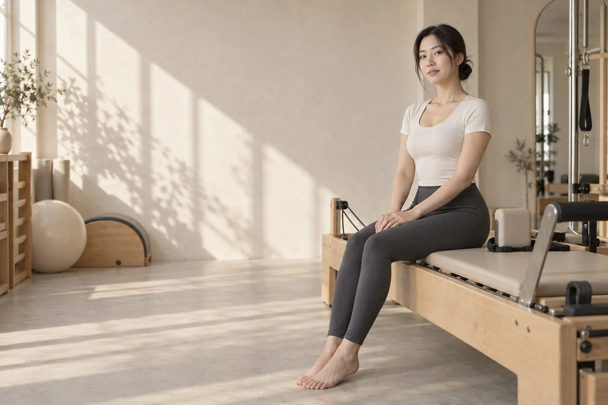
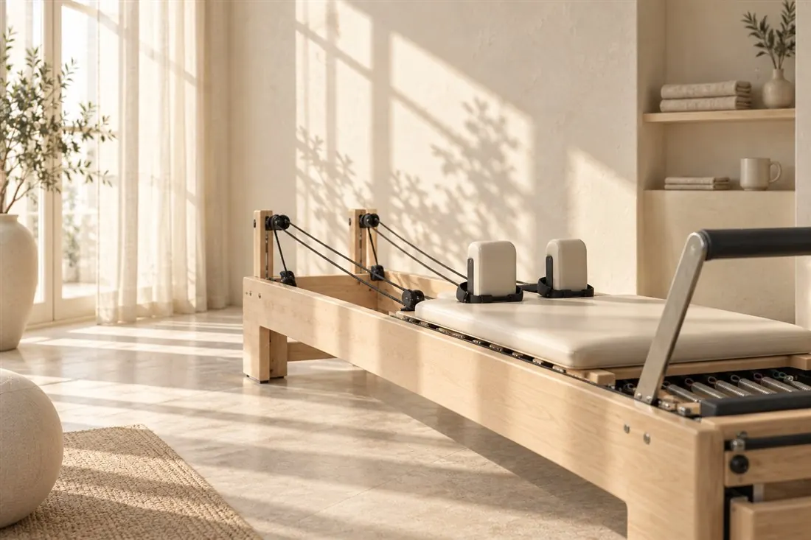
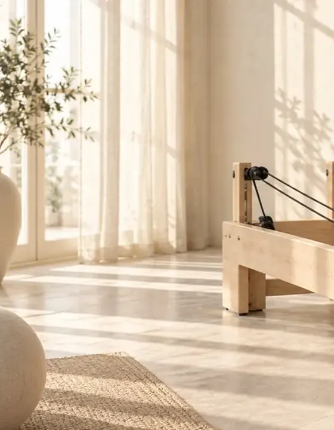
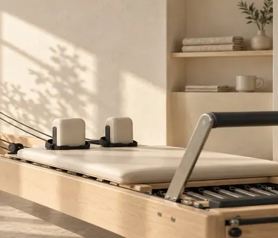

01 / OBSERVE
오늘의 상태부터
운동 경험과 하루의 활동을 묻고, 호흡과 기본 동작에서 편안한 범위를 함께 살핍니다.
PERSONAL PILATES WITH HAN SEOA
빠르게 해내는 하루에서 잠시 벗어나 호흡부터, 내 몸의 속도로 시작합니다.

나에게 맞춘 개인 레슨1:1
호흡부터 마무리까지50분
호흡·감각·기초 중심기초
더 많이 하기보다, 더 잘 느끼는 시간
오래 앉아 일한 날에도, 운동이 낯선 날에도. 누군가의 속도를 따라갈 필요는 없습니다. 오늘의 컨디션을 묻고, 편안한 호흡과 기본 동작부터 차근히 살펴봅니다.
어려운 동작을 몇 개 했는지보다, 어떤 움직임이 나에게 편안했는지. 수업이 끝난 뒤에도 스스로 기억할 수 있도록 짧고 명확하게 설명합니다.
02 — YOUR INSTRUCTOR
작은 호흡의 변화, 발바닥이 바닥에 닿는 감각처럼 쉽게 지나치는 것들을 함께 살핍니다
처음 시작하는 분도 자신의 움직임을 천천히 배워갈 수 있도록 안내합니다
수업이 끝난 뒤에도 스스로 기억할 수 있는 설명 한 가지를 남깁니다
CREDENTIALS
입문자 대상 기초 수업을 안내하며 지도 방식을 다듬었습니다.
퇴근 후 짧게 집중하는 직장인 수업 구성을 경험했습니다.
개인의 컨디션과 목표에 맞춘 레슨으로 범위를 확장했습니다.
인물과 경력은 샘플을 위한 창작 설정입니다.
03 — HOW I TEACH
복잡한 동작보다, 이해할 수 있는 설명부터. 무엇을 보고 어떻게 안내하는지 살펴보세요.
서울 성수 · 평일 저녁 / 토요일 오전 — 예시 지역·일정
01 / OBSERVE
운동 경험과 하루의 활동을 묻고, 호흡과 기본 동작에서 편안한 범위를 함께 살핍니다.
02 / GUIDE
한 번에 하나의 단서를 설명합니다. 호흡, 발의 지지, 몸의 방향을 나눠 연습합니다.
03 / REFLECT
편안했던 동작과 기억할 설명 한 가지를 정리해, 다음 수업의 출발점으로 삼습니다.
FOUNDATION
호흡과 발의 지지를 차근히 살피며, 내 몸의 감각을 알아차리는 기초 수업입니다.
PERSONAL PRACTICE
같은 동작도 속도와 범위를 달리 연습하고, 나에게 편안했던 방식을 함께 정리합니다.
지도 과정을 설명하는 양식 예시입니다. 실제 회원의 기록이 아니며, 제공 내용은 운영 강사와 확인합니다.
수업 노트는 교육 과정을 설명하기 위한 것이며 의료 평가나 효과 측정이 아닙니다.
FIRST VISIT
부담 없이 시작할 수 있도록 첫 수업의 흐름을 정리해 두었습니다.
01
운동 경험과 오늘의 컨디션, 궁금한 점을 편하게 나눕니다.
02
호흡과 발의 지지 등 기본부터 천천히 함께 살핍니다.
03
나의 속도에 맞춰 동작을 작은 단계로 나눠 연습합니다.
04
편안했던 범위와 기억할 설명 한 가지를 정리합니다.



빛이 머무는 공간에서, 움직임에만 집중할 수 있도록.
04 — WORDS AFTER PRACTICE
후기의 표현 방식까지 살펴보실 수 있도록 작성한 가상 수강 후기입니다.
실제 고객의 발언이나 결과를 입증하는 자료가 아닙니다.
“발은 어디에 두는지부터 알려줘요. 동작을 왜 나눠서 연습하는지 설명을 들으니 따라가기 편했어요.”
“지난 시간에 어려웠던 부분을 다시 물어보고 시작해요. 서두르지 않는 방식이 좋았어요.”
FOR STUDIO DIRECTORS & PARTNERS
원장님·협업처가 확인하는 지점을 따로 정리했습니다. 아래 내용은 가상 설정입니다.
01 / WHY WORK TOGETHER
1:1 레슨 중심 — 신규 회원 온보딩부터 정기 수업 운영까지 바로 투입 가능합니다.
02 / WHY WORK TOGETHER
직장인 대상 소그룹·개인 수업 구성 경험으로 시간대별 수요 조율에 익숙합니다.
03 / WHY WORK TOGETHER
매수업 기록을 정리해 원장님 보고와 프로그램 개선 자료로 함께 씁니다.
“강사의 역할은 어려운 동작을 보여주는 것이 아니라, 회원이 자신의 움직임을 이해하도록 돕는 것이라고 생각합니다.”
WORKING CONDITIONS — 협업 조건
공유 스튜디오 기반 레슨 경험으로 공간·기구 세팅 협업에 익숙합니다. 입문자 신규 프로그램 기획 참여도 가능합니다.
05 — BEFORE WE MEET
실제 운영 사이트에서는 강사의 정책에 맞춰 안내합니다.
이 샘플은 입문자를 위한 수업 흐름을 가정했습니다. 실제 수업에서는 운동 경험과 목표를 먼저 확인하고 가능한 범위에서 진행합니다.
예시 장소는 서울 성수의 공유 스튜디오이며 실제 주소나 예약 가능한 공간은 없습니다. 실제 운영 사이트에서는 정확한 위치·이용 조건·준비물을 안내합니다.
필라테스 지도는 의료 진단을 대신하지 않습니다. 통증이나 질환이 있다면 운동을 시작하기 전 의료진과 상담해 주세요. 이 데모에서는 건강정보를 입력받지 않습니다.
아니요. 한서아는 가상 인물입니다. 상담 체험에서는 수업과 시간대를 고르는 흐름만 확인할 수 있으며, 입력 내용은 저장되거나 전송되지 않습니다.
이 데모에서는 수업과 시간대를 고르는 흐름만 체험할 수 있습니다. 실제 운영 사이트에서는 이 단계에 강사의 상담 채널(카카오톡·전화)이 연결됩니다.
서아 필라테스
어떤 수업이 나에게 맞을지, 간단한 선택으로 상담 흐름을 체험해 보세요.
실제 예약이 아닌 데모입니다. 개인정보 수집·저장·전송 없음.